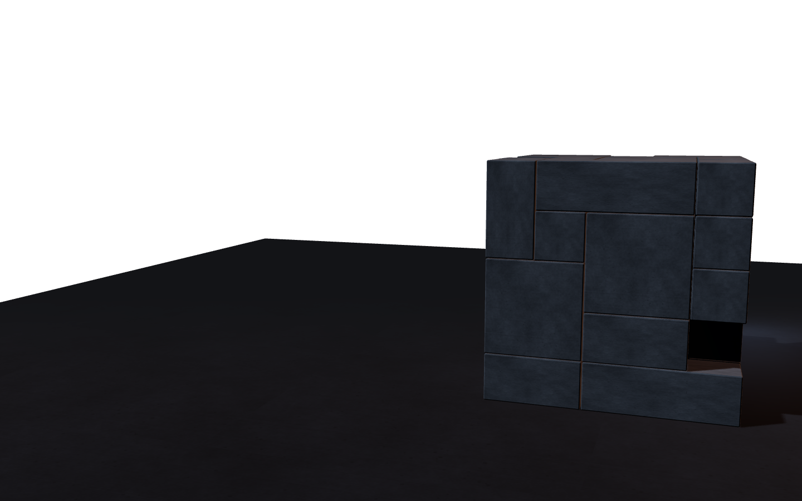
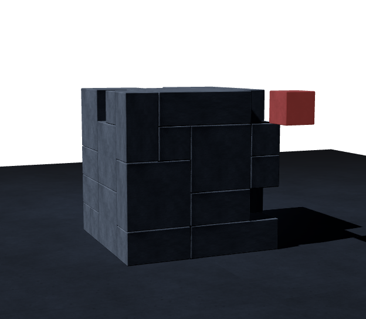

Maandag
Afspraak
Eén proces. Een duidelijke afspraak.
We kiezen samen één proces, en één cijfer waaraan we het resultaat meten.
Op tafel om 17u: een afgebakende opdracht en één meetbaar doel.

sameweek.ai
AI-automatisatie voor kmo's
Dat werk dat elke week terugkomt? We pakken één proces aan en bouwen het in vijf werkdagen. In jouw werkruimte. Met jouw mensen.
Wat kost jou elke week tijd?
Een kennismaking van 30 minuten. Gewoon even kijken wat kan.
I Je kent het werk
Je kent het werk. Je kan het al dromen. Aanvragen overtypen. Documenten nakijken. Weer datzelfde rapport. Elke week opnieuw, en je weet best dat een deel daarvan automatisch zou kunnen gaan.
Dus vraag je een voorstel voor automatisering, en je krijgt een plan van drie maanden terug. Analyse, ontwerp, bouw, testen, en ergens rond dag negentig zou er iets moeten draaien. Tegen dan is je proces al veranderd en heeft niemand nog zin in automatisering.
90 dagen. Het gebruikelijke plan.
Wij doen het anders. Eén proces, niet de hele administratie. Elke dag van de week heeft een precies doel, en vrijdag is geen ambitie: het staat in de agenda.
Die eerste week is de proefweek. Daarna komt het ritme: bouwblok na bouwblok, in jouw eigen werkruimte, met jouw mensen.
II Hoe we werken
Een oplossing is pas goed als je team ermee verder kan. Ook als wij weer weg zijn.
"Automatiseer de administratie" is geen opdracht, dat is een wens. "Elke aanvraag die via de website binnenkomt in het klantensysteem zetten, een antwoord klaarzetten en pas versturen als iemand bij jou het heeft nagekeken" is er wel een. Dat bouwen we in een week, en het werkt op vrijdag ook echt.
Niet zwaarder dan nodig. We gebruiken wat je al hebt, en AI alleen voor de stap waar het iets toevoegt.
We bouwen in de systemen van jouw bedrijf, niet in de onze. De accounts staan op jouw naam. Wat we samen maken, blijft van jou als we weggaan.
Twee of drie medewerkers bouwen met ons mee. Zij weten hoe het werkt, wat ze kunnen aanpassen en hoe ze het uitzetten.
De automatisering krijgt een eigen login en mag in het begin alleen meekijken. Er vertrekt niets naar buiten zonder dat iemand bij jou het nakijkt en op verzenden klikt. Jouw IT-partner zit eventueel mee aan tafel vóór er iets live gaat.

Afspraak
We kiezen samen één proces, en één cijfer waaraan we het resultaat meten.
Op tafel om 17u: een afgebakende opdracht en één meetbaar doel.
Plan
Jij bepaalt wat de automatisering mag doen en waar een mens controleert.
Op tafel om 17u: een ontwerp in gewone woorden, door jou nagekeken.
Eerste versie
We bouwen in jouw werkruimte, met je mensen erbij. Je stuurt bij terwijl het groeit.
Op tafel om 17u: een eerste werkende versie om samen te testen.
Getest
We laten echte aanvragen en documenten door het proces lopen, en jij kijkt mee. We testen ook wat er gebeurt als informatie ontbreekt of iets fout gaat.
Op tafel om 17u: een geteste versie, met duidelijke controles en een uitknop.
Live
Versie één draait, onder toezicht. Nieuwe ideeën van onderweg bewaren we voor een volgende bouwweek.
Op tafel om 17u: een proces dat draait in jouw omgeving, en een team dat ermee verder kan.
IV Wat live betekent
V Daarna
VI Je zit aan tafel met
Oprichter
Ervaring.
Meer dan 25 jaar ervaring als zelfstandig IT-consultant en programmamanager, de laatste jaren op directieniveau in de private sector en bij de overheid. Nu die ervaring inzetten waar je ze meteen voelt: in het werk van je team.
Het netwerk
Jeugdig enthousiasme.
sameweek.ai werkt samen met een aantal jonge leeuwen: bouwers die zijn opgegroeid met AI-agenten en automatisatie.
VII Goeie vragen
Wat zou jij vrijdag graag kwijt zijn? Vertel ons welk werk elke week terugkomt en plan je kennismaking. Een half uur, geen verkooppraatje.
sameweek.ai
Van intake tot live in 5 werkdagen.
Een kleine ingreep. Een andere werkweek.
Een initiatief van Fender ICT
Goudbloemlaan 12, 2970 Schilde
BTW BE0465.243.969
Algemene voorwaarden, met de definitie van "live".
Gegevensformulier, in gewone woorden.
build 960f1a8 · 21/09/2026